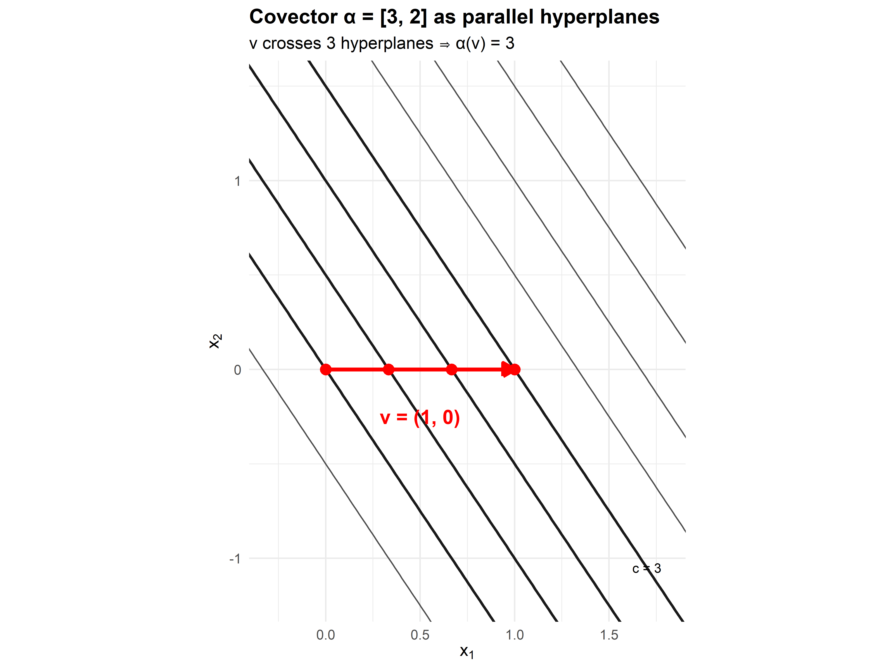
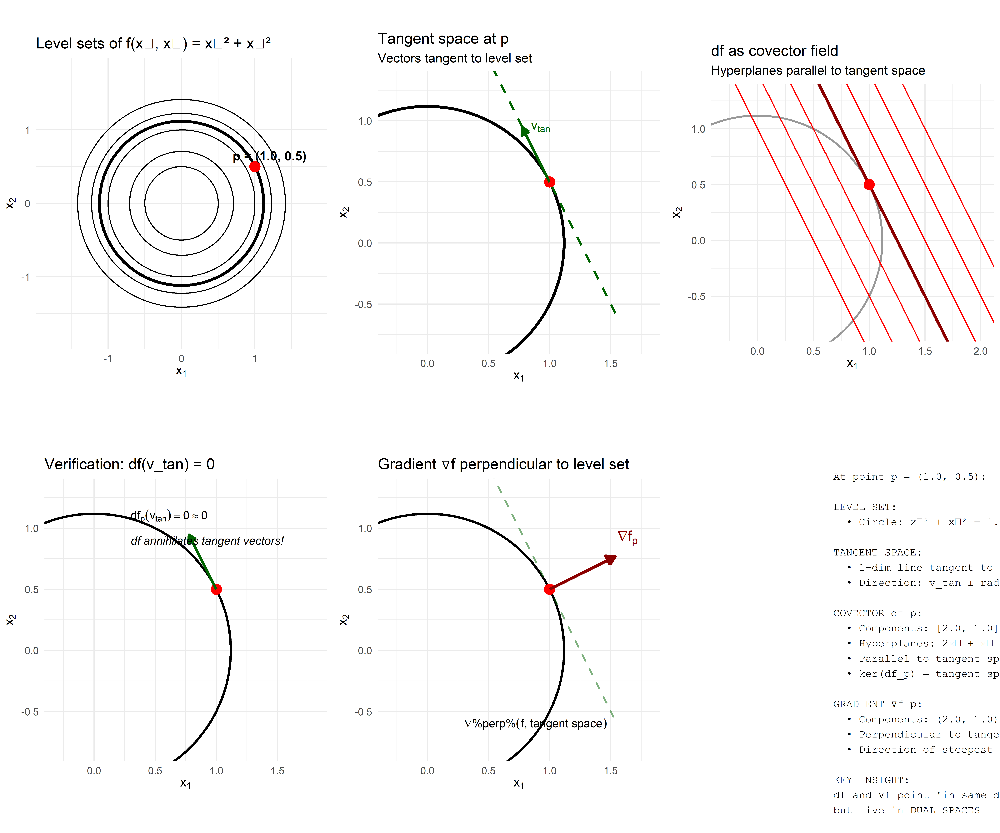
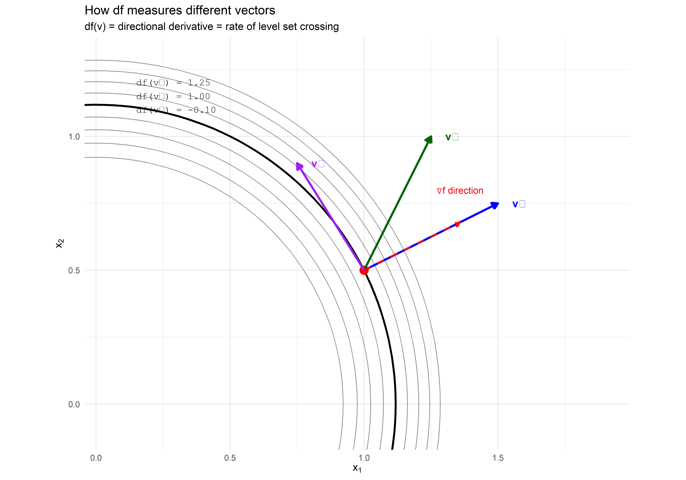

B The Fundamental Theorem of Calculus: A Modern View
B.1 Why Another Look at the FTC?
You already know the fundamental theorem of calculus from your undergraduate education:
\[\int_a^b f'(x)\,dx = f(b) - f(a)\]
This seems like a purely one-dimensional statement about functions on the real line. But hidden within this simple equation is a profound geometric principle that transcends dimension and applies to calculus on curves, surfaces, and manifolds of any dimension.
The modern view, formulated through differential forms, reveals that the FTC is really about the duality between boundaries and derivatives. This perspective is particularly valuable for stochastic calculus because it clarifies:
- Why differential notation \(df\) behaves differently from classical derivatives
- The geometric meaning of integration along paths (crucial for Itô integrals)
- Why quadratic variation has a geometric interpretation
- The relationship between Brownian motion’s “roughness” and differential structure
In this appendix, we’ll rebuild the FTC from the ground up using the language of differential forms, emphasizing geometric intuition over formal machinery.
B.2 The Classical Version: What Are We Actually Integrating?
Let’s start with what you know. The fundamental theorem says:
\[\int_a^b f'(x)\,dx = f(b) - f(a)\]
B.2.1 What to Look For
Before accepting this as given, ask: what kind of object is \(f'(x)\,dx\)?
- \(f'(x)\) is a function (assigns a number to each point)
- \(dx\) is… what exactly?
- Their product \(f'(x)\,dx\) is the thing we integrate
The modern answer: \(f'(x)\,dx\) is a differential 1-form. It’s not just a function times a “infinitesimal”—it’s a geometric object that knows how to eat curves and output numbers.
B.3 Forms and Chains: A Duality
B.3.1 The Geometric Side: Chains
Think of chains as formal sums of geometric objects:
- 0-chains: formal sums of points, like \(3p_1 - 2p_2 + p_3\)
- 1-chains: formal sums of oriented curves
- 2-chains: formal sums of oriented surfaces
- k-chains: formal sums of k-dimensional oriented objects
These form vector spaces \(C_0, C_1, C_2, \ldots\)
Example: The interval \([a,b]\) is a 1-chain. Its boundary is the 0-chain: \[\partial[a,b] = b - a\] where the minus sign indicates orientation (we “exit” at \(b\) and “enter” at \(a\)).
B.3.2 The Algebraic Side: Forms
Forms are the dual objects to chains. They are linear functionals that eat chains and output numbers:
- 0-forms: functions \(f: M \to \mathbb{R}\)
- 1-forms: things you integrate along curves
- k-forms: things you integrate on k-dimensional objects
These form vector spaces \(C^0, C^1, C^2, \ldots\) (note the superscripts—these are dual spaces).
B.3.3 The Pairing: Integration
The fundamental pairing between a k-form \(\omega\) and a k-chain \(c\) is:
\[\langle \omega, c \rangle = \int_c \omega\]
This is a bilinear map \(C^k \times C_k \to \mathbb{R}\).
Forms are covectors: they’re row vectors that eat column vectors (chains) via this integration pairing.
B.4 The Fundamental Insight: Adjointness
The boundary operator \(\partial\) takes k-chains to (k-1)-chains:
\[\partial: C_k \to C_{k-1}\]
The exterior derivative \(d\) takes (k-1)-forms to k-forms:
\[d: C^{k-1} \to C^k\]
Stokes’ theorem is the statement that \(d\) and \(\partial\) are adjoint operators:
\[\boxed{\int_c d\omega = \int_{\partial c} \omega}\]
or in inner product notation:
\[\langle d\omega, c \rangle = \langle \omega, \partial c \rangle\]
This is exactly like \((A^*v, w) = (v, Aw)\) for a linear operator and its adjoint.
B.4.1 The FTC is a Special Case
For a function \(f\) (a 0-form) on \(\mathbb{R}\):
- \(df\) is the 1-form \(f'(x)\,dx\)
- The interval \([a,b]\) is a 1-chain
- Its boundary is \(\partial[a,b] = b - a\)
Stokes’ theorem gives:
\[\int_{[a,b]} df = \int_{\partial[a,b]} f = \int_{\{b\}} f - \int_{\{a\}} f = f(b) - f(a)\]
The FTC is Stokes’ theorem in dimension 1.
B.5 Why \(d^2 = 0\) and \(\partial^2 = 0\)
A beautiful consequence of adjointness:
Geometric fact: The boundary of a boundary is empty: \(\partial^2 = 0\)
An interval’s boundary is two points. Points have no boundary.
By adjointness: \[\langle d^2\omega, c \rangle = \langle d\omega, \partial c \rangle = \langle \omega, \partial^2 c \rangle = \langle \omega, 0 \rangle = 0\]
Therefore \(d^2 = 0\) follows from the geometric fact \(\partial^2 = 0\).
This is why we can never write \(d^2f\)—the exterior derivative of a derivative is always zero.
B.6 The Geometric Picture: Vectors vs Covectors
Now we get to the heart of the geometric interpretation. This is crucial for understanding what \(df\) actually is.
B.6.1 Vectors Are Arrows, Covectors Are Hyperplanes
At a point \(p\) in a manifold \(M\):
- Tangent space \(T_p M\): vectors (arrows emanating from \(p\))
- Cotangent space \(T_p^* M\): covectors (linear functionals on vectors)
A covector \(\alpha \in T_p^* M\) can be visualized as a family of parallel hyperplanes. When \(\alpha\) acts on a vector \(v\):
\[\alpha(v) = \text{"how many hyperplanes does } v \text{ cross?"}\]
Let’s make this concrete.
B.6.2 A Concrete Example in \(\mathbb{R}^2\)
Consider the covector \(\alpha = [3, 2]\) (as a row vector) at the origin. This defines the linear functional:
\[\alpha(x_1, x_2) = 3x_1 + 2x_2\]
The level sets are the hyperplanes (lines in 2D): \[3x_1 + 2x_2 = c \quad \text{for } c = 0, 1, 2, 3, \ldots\]
These are equally-spaced parallel lines.
Now take a vector \(v = (1, 0)\) (column vector). What is \(\alpha(v)\)?
\[\alpha(v) = [3, 2] \begin{bmatrix} 1 \\ 0 \end{bmatrix} = 3\]
Geometric interpretation: Starting from the origin (on the \(c=0\) line), the vector \(v\) pierces through the lines \(c=1, c=2, c=3\). It crosses exactly 3 hyperplanes.

Figure B.1: A covector as a family of parallel hyperplanes. The vector v crosses exactly 3 unit-spaced hyperplanes, so α(v) = 3.
B.6.3 Functions, Differentials, and Gradients
Now consider a function \(f: \mathbb{R}^2 \to \mathbb{R}\). For concreteness:
\[f(x_1, x_2) = x_1^2 + x_2^2\]
Three objects are associated with \(f\):
- The function itself (0-form): assigns numbers to points
- The differential \(df\) (1-form, covector field): at each point, a covector
- The gradient \(\nabla f\) (vector field): at each point, a vector
Key distinction: - \(df\) exists naturally, coordinate-free - \(\nabla f\) requires a metric to define (we need to convert covectors to vectors)
In \(\mathbb{R}^n\) with the Euclidean metric, they look the same:
\[df = \left[\frac{\partial f}{\partial x_1}, \frac{\partial f}{\partial x_2}\right] \quad \text{(covector)}\]
\[\nabla f = \left(\frac{\partial f}{\partial x_1}, \frac{\partial f}{\partial x_2}\right) \quad \text{(vector)}\]
But they live in dual spaces.
B.6.4 The Geometric Relationship
At a point \(p = (1, 0.5)\):
- Level set: circle \(x_1^2 + x_2^2 = 1.25\)
- Tangent space: 1-dimensional line tangent to the circle at \(p\)
- \(df_p\): covector whose hyperplanes are parallel to the tangent space
- \(\nabla f_p\): vector perpendicular to the tangent space
The key property: \(df_p\) annihilates tangent vectors.
If \(v\) is tangent to the level set at \(p\), then: \[df_p(v) = 0\]
This is because moving along the level set doesn’t change \(f\).

Figure B.2: The relationship between level sets, tangent spaces, df (covector), and ∇f (vector). The covector df creates hyperplanes parallel to the tangent space, while the gradient is perpendicular to both.
B.6.5 The Action of df on Vectors: Directional Derivatives
When \(df_p\) acts on a tangent vector \(v\) at \(p\), it computes the directional derivative:
\[df_p(v) = \text{rate at which } f \text{ changes along } v\]
Geometrically, this is the rate at which \(v\) crosses level sets.
- If \(v\) is tangent to a level set: \(df_p(v) = 0\) (no level sets crossed)
- If \(v\) points along \(\nabla f\): \(df_p(v)\) is maximized (crosses level sets fastest)
- If \(v\) points opposite to \(\nabla f\): \(df_p(v) < 0\) (crosses in reverse)

Figure B.3: The action of df on different vectors. df(v) measures how fast f changes along v, which equals how fast v crosses level sets.
B.7 Connection to Stochastic Calculus
This geometric perspective illuminates several mysteries in stochastic calculus:
B.7.1 1. Why df Notation Matters
In classical calculus, we write \(\frac{df}{dx} = f'(x)\) and treat \(df\) and \(dx\) somewhat interchangeably.
In stochastic calculus, \(df\) and \(dX\) are fundamentally different objects:
- \(dX_t\) is a 1-form (covector) when \(X_t\) is a stochastic process
- The integral \(\int_0^t f(X_s)\,dX_s\) pairs a function with a 1-form
- Itô’s lemma expresses \(df(X_t)\) in terms of 1-forms \(dX_t\) and \(dt\)
The modern view: stochastic differentials are forms, and integration is the pairing between forms and chains (paths).
B.7.2 2. Quadratic Variation as Geometry
The quadratic variation \([X]_t\) is related to the fact that Brownian paths are “rough”—they cross infinitely many level sets even in infinitesimal time intervals.
For a smooth path, \((dx)^2 = 0\) in the limit. For Brownian motion, \((dB_t)^2 = dt \neq 0\), which means:
The hyperplane structure of \(dB_t\) is fundamentally different from smooth differentials.
B.7.3 3. The Itô vs Stratonovich Distinction
Different choices of evaluation points in stochastic integration (Itô vs Stratonovich) correspond to different ways of pairing the form \(dX_t\) with the chain (path).
- Itô: evaluate at left endpoint
- Stratonovich: evaluate at midpoint
The classical FTC doesn’t distinguish these because for smooth paths, all evaluation points give the same answer. For rough paths, the choice matters.
B.8 Summary: The Big Picture
B.8.1 What We’ve Learned
The FTC is really Stokes’ theorem: \(\int_c d\omega = \int_{\partial c} \omega\)
Forms and chains are dual:
- Chains are geometric (points, curves, surfaces)
- Forms are algebraic (functionals on chains)
- Integration is their pairing
\(d\) and \(\partial\) are adjoint operators: This explains why \(d^2 = 0\) follows from \(\partial^2 = 0\)
Covectors are hyperplanes, vectors are arrows:
- \(df\) creates a family of hyperplanes (level sets of \(f\))
- \(\nabla f\) points perpendicular to these hyperplanes
- They live in dual spaces
\(df\) annihilates tangent vectors: If \(v\) is tangent to a level set, \(df(v) = 0\)
B.8.2 Why This Matters for Stochastic Calculus
The rough paths of Brownian motion force us to take the differential structure seriously:
- We cannot treat \(df\) as merely shorthand for \(f'(x)\,dx\)
- The form structure explains why \((dB_t)^2 = dt\)
- Different integration schemes (Itô, Stratonovich) are different pairings of forms and chains
- The fundamental theorem takes on new meaning when paths are nowhere differentiable
This geometric perspective transforms stochastic calculus from a collection of unmotivated rules into a coherent geometric theory. The “strangeness” of stochastic integration is just the manifestation of integrating forms along rough chains—something classical calculus never had to confront.
B.9 Further Reading
For readers interested in exploring this perspective further:
- Spivak, M. (1965). Calculus on Manifolds. Chapters 4-5 on differential forms and Stokes’ theorem
- Lee, J.M. (2013). Introduction to Smooth Manifolds. Chapter 14 on differential forms
- Frankel, T. (2011). The Geometry of Physics. For physical applications of forms
- Friz, P. & Hairer, M. (2014). A Course on Rough Paths. Modern treatment connecting geometry and stochastic analysis
The interplay between geometry and analysis continues to be one of the most fruitful areas in modern mathematics, with stochastic calculus sitting at a particularly interesting intersection.